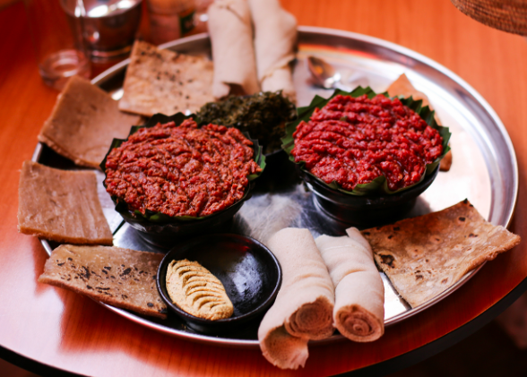

Kitfo
In the previous page we have seen foods that are eaten during fast seasons, Here are some of the foods that include Meat and Dairy products. These food are mainly common in fasting period startings and endings.
Ethiopians make several types of foods than the usual during Holidays.

Fig. Include "Ayib be siga", "Doro wet or Chicken"

Fig. "Kitfo" is cooked using raw Meat